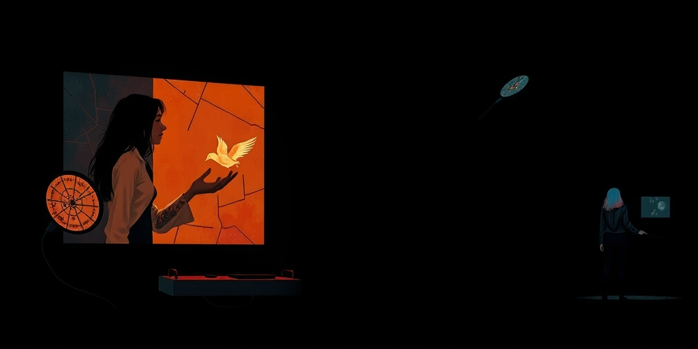

小汪老师的成长洞察 · 属于你的成长专栏
发射倒计时进行中，任务控制中心一片寂静。耳机里是各系统确认声，屏幕上遥测数据在滚动。右下角坐着一个扎麻花辫的女孩，黄头发，手臂上有纹身。这个画面被截屏传到中文网络，评论区最热的词不是"星舰"，不是"控制软件"，而是"花臂女神"。一群人围着一个火箭工程师，热烈讨论她的穿搭，而她正在确保几千吨燃料安全点火。
郭璨的视频在微博、抖音、B站刷屏了。她是SpaceX星舰项目的华裔女工程师，美籍，00后，负责发射控制系统的软件开发。评论区的高频词很整齐："花臂女神""星舰女王""好酷""女孩子就该这样活"。
没有人在讨论她的教育背景。没有人问她写了什么代码。没有人好奇她在怎样的压力下完成工作。一个工程师之所以成为工程师的东西——她的专业训练、她对航天领域的长期关注、她进入SpaceX的路径——全部被略过了。公众只消费了一件事：一个"看起来很酷"的女孩坐在任务控制中心的画面。
这里有一个对比很残忍。如果一个男工程师坐在同样的位置，讨论焦点会是他的技术路线、他的项目经验、他的职业轨迹。但郭璨被讨论的，是她的花臂、黄发和麻花辫。不是别人故意贬低她，而是当人们想"欣赏"一个厉害的女性时，第一反应还是去打量她的外表。
社交媒体有一套自己的淘汰逻辑。一个工程师的代码能力是隐性的，无法在一张照片里被看到。花臂、黄头发、麻花辫是显性的，一秒钟就能被识别、被标签化、被传播。"花臂女工程师"是完美的病毒内容：认知反差够大，性别标签够强，视觉冲击够直接。
算法不关心她控制了什么系统，只关心你的手指会不会停下来点赞。这不是阴谋，这是注意力经济的运行规则。那些最容易被传播的特质，往往是一个人能力结构里最不重要的部分。但当传播成为目的，那些真正重要的东西就被过滤掉了。
更微妙的是，很多人不是在传播"女性力量"，而是在传播"一个好看的矛盾体"。花臂和航天的组合制造了一种戏剧性，这种戏剧性有流量价值。至于她到底做了什么了不起的工作，那是另一件事，很少有人追问。

这里有一个残酷的反讽：那些最热烈称赞郭璨"代表了女性力量"的人，正在用她们的称赞消解她的力量。当你只看到花臂，你就没看到她的专业训练。当你讨论"如果在国内能不能被接纳"，你就默认了她的外表是一个需要被讨论的问题。
把她说成"花臂女神"，本质上是把一个人格立体、能力过硬的工程师，压缩成一张视觉标签。这不是恶意，这是认知惯性。我们太习惯用外表度量女性了。以至于当有人说"不要用外表度量她"时，你的第一反应是"可是她的外表真的很特别"。这个"可是"本身就说明问题。
真正的女性力量——在高压航天任务中保持冷静的能力、在男性主导领域用实力立足的坚韧——被完全略过了。因为它们没有对应的视觉符号。自由、独立、强大，这些品质被压缩成了一套消费级审美：花臂等于自由，黄发等于不羁，麻花辫等于随性。你看，连"力量"本身都要被包装成好看的样子才有人愿意看。
做一个思想实验：如果坐在那个位置上的，是一个没有花臂、没有黄头发、穿着规规矩矩的女工程师，她还能代表"自由向上的女性力量"吗？大概率不能。她会因为"不够酷"而被忽略，会因为"看起来太普通"而无法触发算法推荐的阈值。
这意味着什么？意味着被赞美的根本不是"女性力量"，而是"女性力量的外包装"。包装要够特别、够反差、够上镜，才值得被讨论。至于里面的东西——专业能力、职业成就、人格厚度——反而不重要。
这个逻辑推到尽头是很荒谬的。它意味着一个女性要获得公众认可，除了在自己的领域做到顶尖之外，还得恰好拥有一套符合社交媒体审美的"可识别符号"。否则你再厉害，别人也看不见。这不是在鼓励女性"做自己"，这是在设置另一套更隐蔽的外表标准。
写给你的话
下次你看到一个厉害的女性，你能不能做一件事：在注意到她的外表之前，先问自己一个问题——她做了什么，才配坐在这里？如果回答不上来，你对她的"欣赏"可能只是一种对自己审美品味的确认。你只是在说"我喜欢这种看起来很酷的人"，而不是在说"我看见了她的了不起"。这两句话之间的差距，就是我们这个时代对女性认知的缺口。郭璨不需要被包装成"花臂女神"才值得被看见。她写的代码不会因为有没有纹身而运行得更快或更慢。但我们需要从这场讨论中看见自己——我们有多习惯用眼睛消化一个女性，而不是用脑子。
参考资料
[1] Psychology says adults who learned to depend on no one as children don't grow into self-sufficient adults; they grow into people who confuse asking for help with weakness (The Economic Times) https://economictimes.indiatimes.com/news/international/us/psychology-says-adults-who-learned-to-depend-on-no-one-as-children-dont-grow-into-self-sufficient-adults-they-grow-into-people-who-confuse-asking-for-help-with-weakness-and-slowly-build-a-life-no-one-else-knows-how-to-step-int/articleshow/131584751.cms
[2] Words of Wisdom by Sandra Carey: 'Never mistake knowledge for wisdom. One helps you make a living; the other helps you make a...' (The Economic Times) https://economictimes.indiatimes.com/news/international/us/words-of-wisdom-by-sandra-carey-never-mistake-knowledge-for-wisdom-one-helps-you-make-a-living-the-other-helps-you-make-a-why-life-success-needs-more-than-information/articleshow/131659778.cms
小汪老师的成长洞察 · 属于你的成长专栏